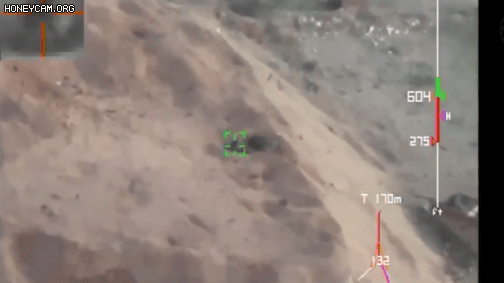
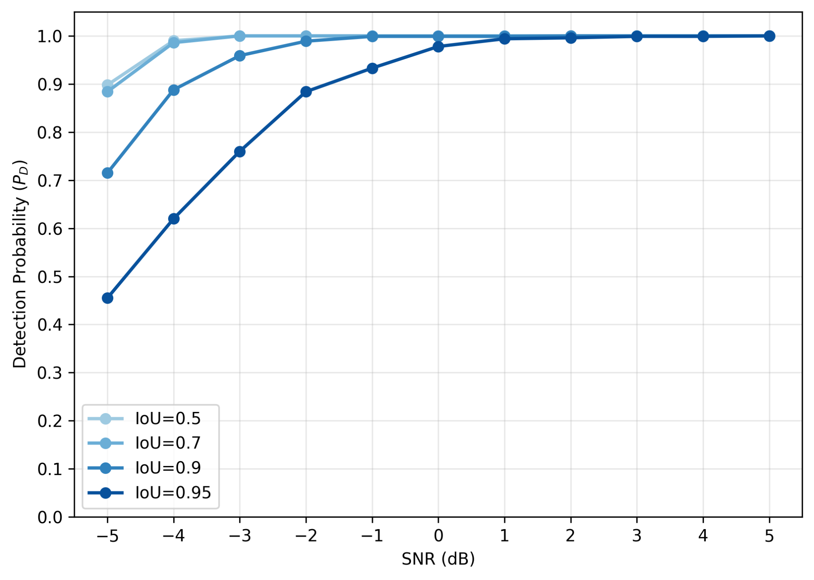
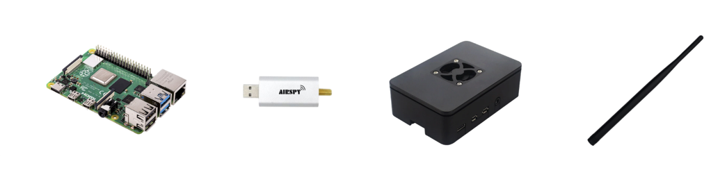

Paper / Demo Video 1 / Demo Video 2
근래 전장에서 기존 감시 체계로 탐지가 어려운 소형 공격 드론, 배회탄약, 저고도 무인기의 활용이 증가하고 있다.
이들은 저전력 송신·주파수 도약·짧은 송신 시간 등 저피탐(LPI) 통신을 구사할 수 있어, 조기 탐지 기술의 필요성이 커지고 있다.
그러나 저피탐 신호는 신호 세기를 기반으로 판단하는 에너지 검출 기반 스펙트럼 센싱만으로는 저 SNR 환경에서 신뢰성 있는 탐지와, 신호의 정확한 시간-주파수 위치를 파악하기 어렵다. 이를 보완하고자 AI 기반 탐지 기법이 활용되고 있으나, 실제 전장 환경에서는 외부 서버와의 안정적인 연결을 보장하기 어렵다.
이에 본 논문에서는 스펙트로그램 상에서 저피탐 신호의 시간-주파수 위치 검출을 객체 탐지 문제로 정의하고, YOLOv8n 기반 실시간 온디바이스 스펙트럼 센싱 시스템을 제안한다.
최근 전장 환경에서 드론을 비롯한 저고도·저속 비행체의 활용이 급증하고 있다. 이러한 표적은 기존 감시 체계로 안정적인 탐지가 어려워 조기 탐지 체계의 필요성이 커지고 있다.

저고도·저속 비행체는 레이더 반사면적이 작아 레이더 기반 탐지가 어렵다는 한계를 가진다. 이에 따라 표적 자체를 탐지하는 대신, 표적과 조종자 사이에서 송수신되는 무선 통신 신호를 탐지하는 방식이 효과적인 대안으로 주목받고 있다.

그러나 저피탐 통신 신호는 저전력 송신과 빠른 주파수 호핑을 통해 무선 신호의 노출을 최소화한다. 이로 인해 기존 에너지 탐지 기반 스펙트럼 센싱 기법은 신호와 잡음의 구분이 어려운 낮은 SNR 환경에서 탐지 성능이 급격히 저하될 수 있다.


제안 시스템은 시뮬레이션 기반 학습 단계와 실시간 온디바이스 추론 단계로 구성된다.
학습 단계에서는 주파수 호핑 신호와 잡음을 합성하고, 생성한 신호를 FFT 기반 스펙트로그램으로 변환한다. 이후 스펙트로그램에서 신호가 존재하는 시간 및 주파수 구간을 bounding box로 라벨링하여 YOLOv8n 객체 탐지 모델을 학습한다.

추론 단계에서는 SDR로 실제 RF 신호를 수신하고, 수신된 신호를 학습 단계와 동일한 방식의 스펙트로그램으로 변환한다. 생성된 스펙트로그램은 ONNX 포맷으로 변환한 YOLOv8n 모델에 입력되며, 모델은 주파수 호핑 신호의 존재 여부와 시간-주파수 영역에서의 위치를 함께 추정한다.
신호 수신부터 스펙트로그램 생성, 객체 탐지 및 결과 시각화까지의 모든 과정은 Raspberry Pi에서 수행된다. 탐지 결과는 Flask 기반 대시보드를 통해 실시간으로 시각화한다.
시뮬레이션 환경에서 SNR을 변화시키며 제안 시스템의 신호 탐지율을 측정하였다. 탐지 성능은 오탐률 0.1% 이하로 제한하고, 정답과 예측 bounding box 사이의 IoU가 0.9 이상인 경우를 기준으로 평가하였다.
실험 결과, SNR이 높아질수록 신호 탐지율이 향상되는 경향을 확인하였다. 특히 제안 시스템은 오탐률 0.1% 이하, IoU 0.9 기준에서 SNR −3 dB 환경에서도 약 96%의 신호 탐지율을 달성하였다.
이는 신호 에너지가 잡음과 유사한 낮은 SNR 환경에서도 주파수 호핑 신호의 존재 여부와 시간-주파수 영역에서의 위치를 안정적으로 식별할 수 있음을 보여준다.

실제 환경에서의 동작을 확인하기 위해 상용 Spectrum Analyzer 화면과 제안 시스템의 탐지 결과를 비교하였다.
SNR −5 dB 환경에서는 신호 에너지가 잡음 바닥과 유사하여 Spectrum Analyzer 화면에서 주파수 호핑 신호를 육안으로 구분하기 어렵다. 반면 제안 시스템은 동일한 조건에서 호핑 신호를 탐지하고, 탐지된 시간 및 주파수 구간을 bounding box로 시각화하였다.

실제 환경에서는 Signal Generator를 이용해 주파수 호핑 신호를 낮은 전력으로 송출하고, Spectrum Analyzer와 제안 시스템을 동일한 수신 위치에 배치하였다.
실험은 Spectrum Analyzer 화면에서 신호를 확인할 수 있는 조건과, 신호 에너지가 잡음 바닥과 유사하여 육안 식별이 어려운 저피탐 조건으로 나누어 수행하였다. 이를 통해 실제 RF 신호를 입력받는 환경에서 제안 시스템의 탐지 동작을 확인하였다.


제안 시스템은 Raspberry Pi 4와 Airspy Mini를 중심으로 구성하였다. 안테나와 케이스를 포함한 전체 하드웨어 구성 비용은 총 261,525원이다.
별도의 GPU 서버나 외부 네트워크 연결 없이 RF 신호 수신, 스펙트로그램 변환, 모델 추론 및 결과 시각화까지 전체 과정을 단일 온디바이스 환경에서 수행한다.

| 품목 | 가격 |
|---|---|
| Raspberry Pi 4 Model B (4GB) | 80,900원 |
| Airspy Mini | 145,976원 |
| Raspberry Pi 4 Case | 1,649원 |
| 433 MHz SMA(Male) Antenna | 33,000원 |
| 총합 | 261,525원 |
※ 가격은 프로젝트 제작 당시의 구매 가격을 기준으로 하며, 구매 시점과 판매처에 따라 달라질 수 있다.
시연은 두 가지 조건으로 구성된다. 첫 번째는 Spectrum Analyzer 화면에서 주파수 호핑 신호를 확인할 수 있는 조건이며, 두 번째는 Analyzer 화면에서 신호를 육안으로 구분하기 어려운 저피탐 조건이다.
두 번째 시연에서는 Spectrum Analyzer 화면에서 명확하게 드러나지 않는 신호를 제안 시스템이 탐지하고, 해당 위치를 실시간으로 표시하는 과정을 확인할 수 있다.
Scenario 1: Analyzer Visible / Scenario 2: LPI Condition
ACE Lab, 국립한밭대학교